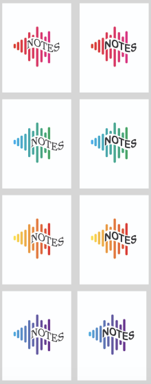

Logo Project
I designed a logo for an imaginary company that I came up with called NOTES. It is a record label that focuses on singing independent artists to kick start their careers with connections to the music industry. The goal of the company is to sign one indepedent artists every month giving everyone a chance to do what they love: music!
The logo on the left is the final logo design I created.
These are first and second drafts of the logo designs. Using Adobe Illustrator and pencil/pen, I created some mockups of a design. I choose the sound waves to be used in my final design after getting feedback from others.

Using different typography, shapes, and colors and through various iterations and feedbacks, a final logo design was created. During this project, I was able to improve my typography and space awarness, as well as Adobe Illustrator (specifically the Pen Tool).